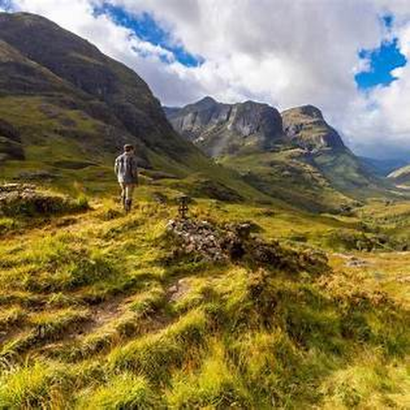

Glencoe
🏔️ valley = valléea low area between mountainsExample: Glencoe is a beautiful valley.
⛰️ mountain = montagnea very high natural hillExample: The mountains are impressive.
🛣️ road = routea way for cars and busesExample: The road goes through Glencoe.
👀 view = vuewhat you can seeExample: The view is amazing.
Try: “I like Glencoe. It looks beautiful.”
I like Glencoe. It is a famous valley in the Highlands. The mountains are beautiful and the view is amazing.